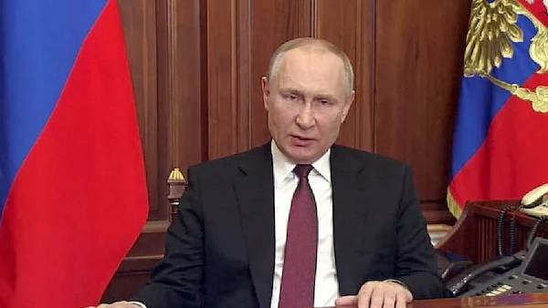
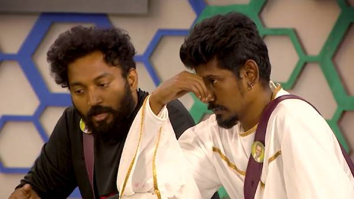
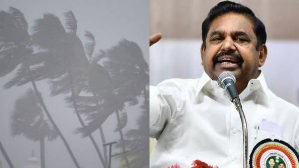
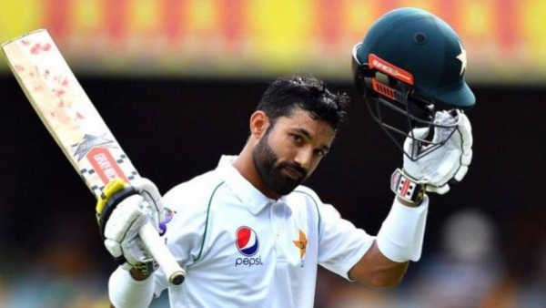
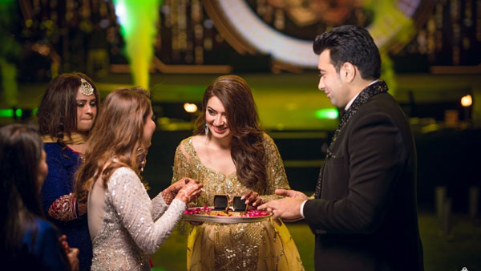
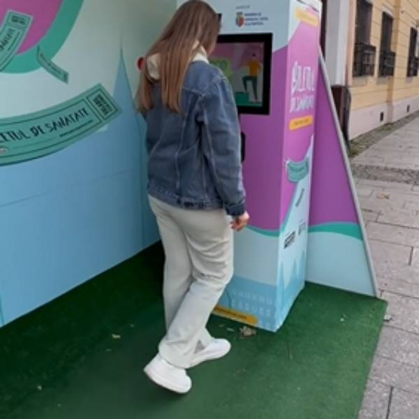
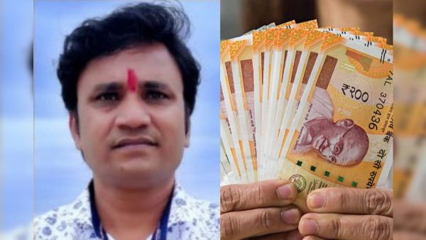
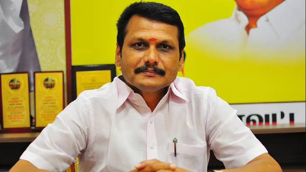

டிவிட்டரில் டிரெண்டாகும் எஸ்பிஐ பாஸ்புக்.. நல்லவேளை லன்ச் டைம் இல்லை..!
டிவிட்டர் எப்போதும் எதாவது புகைந்துகொண்டு தான் இருக்கிறது, அந்த வகையில் டிவிட்டரில் தற்போது எஸ்பிஐ பாஸ்புக்-ஐ டிரெண்டாக்கி வருகிறார்கள் நெட்டிசன்கள்.

300 பில்லியன் டாலர் முதலீட்டில் மிகவும் பிரம்மாண்டமாகத் துவங்கிய FIFA உலகக் கோப்பை இறுதிக்கட்டத்தை எட்டியுள்ளது, பல போட்டிகளுக்குப் பின்பு புட்பால் சூப்பர்ஸ்டார் லியோனல் மெசி தலைமையிலான அர்ஜென்டினா அணி இறுதி ஆட்டத்திற்குத் தேர்வாகியுள்ளது.
இதே நேரத்தில் டிவிட்டரில் எஸ்பிஐ பாஸ்புக் டிரெண்டாகி வருகிறது. இதுக்கும் அதுக்கும் என்னடா சம்பந்தம் என நீங்க கேட்பது புரிகிறது, ஆனால் நெட்டிசன்களின் கிரியேட்டிவ் ஐடியாவுக்குச் சல்யூட் தான் வைக்க வேண்டும்.

"12 மடங்கு பவர்புல்!" ஜப்பானை அலறவிட்ட அதே அணு ஆயுதங்கள்.. யோசிக்கும் புதின்.. அமெரிக்கா கூட தப்பாது

கபட நாடக வேடதாரி யார்? விக்ரமனுக்கு சரியான நோஸ்கட் கொடுத்த கமல்!

சென்னை அருகே “ஷாக்”.. எடப்பாடி ஏற்றிய 100 அடி அதிமுக கொடி! கம்பம் விழுந்து தொண்டர் பலி

பாக். வீரர் முகமது ரிஸ்வானுக்கு தடை விதிக்க வாய்ப்பு.. ஒரே பேட்டியால் சர்ச்சை.. பாய்ந்த புகார்
ன்னையில் சொந்த வீடு வாங்க வேண்டும் என்பது பலருடைய கனவு. உங்களின் அந்த கனவை நிஜமாக்க போகிறது TVS Emerald நிறுவனம். TVS Emerald Green Enclave சார்பாக கட்டப்பட்டுள்ள Harmony குடியிருப்பு மூலம் நீங்கள் சென்னையில் சொந்த வீட்டிற்கு அதிபதி ஆகலாம்!

திருமணம் முடிந்த உடனே ஹன்சிகா வீட்டில் நடந்த சோகம்... டைவர்ஸ் நோட்டீஸ் கொடுத்ததால் பரபரப்பு

ஃப்ரீ பஸ் டிக்கெட் வேணுமா?.. 20 முறை இப்படி செய்தால் கிடைக்கும்.. நம்மூர்லயும் கொண்டு வரலாமே!

ரூ.4 கோடி இன்சூரன்ஸ் பணத்திற்கு ஆசைப்பட்டு.. கொல்லப்பட்ட நபர்.. நண்பர்களே முதுகில் குத்திய சோகம்
மின் இணைப்புடன் ஆதார் எண்ணை இணைக்க கூடுதல் கால அவகாசம்? அமைச்சர் செந்தில் பாலாஜி முக்கிய தகவல்!

சென்னை : மின் இணைப்புடன் ஆதார் எண்ணை 1.03 கோடி பேர் இணைத்துள்ளனர் என்றும், தற்போதைய நிலையில், 31ஆம் தேதி வரை அவகாசம் அளிக்கப்பட்டுள்ளதாகவும் அமைச்சர் செந்தில் பாலாஜி தெரிவித்துள்ளார்.
வணிக நிறுவனங்கள், தொழில் முனைவோர், பொதுமக்கள் ஆதார் எண்ணை இணைப்பதால் அவர்களுக்கு எந்தவிதமான அச்சமும், பயமும் தேவையில்லை என்றும் உறுதி கொடுத்துள்ளார் அமைச்சர் செந்தில் பாலாஜி.
மின் வாரியத்தை மேம்படுத்தும் நடவடிக்கைகளின் அடிப்படையில்தான் ஆதார் எண்ணை இணைக்கக் கூடிய பணிகள் நடைபெற்று வருகிறது எனத் தெரிவித்தார்.
குஜராத் முதலமைச்சராக பூபேந்திர படேல் இரண்டாவது முறையாக பதவியேற்றார். குஜராத் தலைநகர் காந்திநகரில் நடைபெற்ற பதவியேற்பு விழாவில் விழாவில் பிரதமர் நரேந்திர மோடி, உள்துறை அமைச்சர் அமித்ஷா உள்ளிட்டோர் கலந்து கொண்டனர். இந்த நிகழ்ச்சியில் கலந்து கொள்வதற்காக சென்ற அதிமுக ஒருங்கிணைப்பாளர் ஓ.பன்னீர்செல்வம், பிரதமர் மோடி, உள்துறை அமைச்சர் அமித்ஷா, பாஜக தேசியத் தலைவர் ஜே.பி.நட்டா ஆகியோரை சந்தித்துப் பேசினார்.
ஓபிஎஸ் கடிதம்
இதையடுத்து, மத்திய அமைச்சருக்கு கடிதம் எழுதிய ஓ.பன்னீர்செல்வம், அதிமுகவுக்கு நான் தான் ஒருங்கிணைப்பாளர், எனது தலைமையிலேயே கட்சி செயல்படுகிறது, எடப்பாடி பழனிசாமியை இடைக்கால பொதுச் செயலாளராக நியமித்ததை தேர்தல் ஆணையம் அங்கீகரிக்கவில்லை, அதுதொடர்பான வழக்குகளும் நிலுவையில் இருக்கின்றன, இனிமேல், அவரை இடைக்கால பொதுச் செயலாளர் என்று அழைக்கக்கூடாது எனத் தெரிவித்திருந்தார். இதுதொடர்பாக, பாஜக மேலிடத்தோடு நெருக்கமான சில தலைவர்களும் டெல்லிக்கு தூது சொன்னதாகக் கூறப்படுகிறது.
பாஜக மேலிடம் அழைப்பு
இதற்கிடையே தான் குஜராத் சட்டப்பேரவை தேர்தலில் பாஜக வெற்றி பெற்றதையடுத்து பூபேந்திர படேல் இரண்டாவது முறையாக முதல்வராக பொறுப்பேற்றுக் கொண்டார். குஜராத், காந்திநகரில் நடைபெற்ற பதவியேற்பு விழாவில் பிரதமர் நரேந்திர மோடி, உள்துறை அமைச்சர் அமித்ஷா, பாஜக தேசிய தலைவர் நட்டா உள்ளிட்டோர் பங்கேற்றனர். பதவியேற்பு விழாவில் பங்கேற்க பாஜவின் கூட்டணி கட்சி தலைவர்கள் அனைவருக்கும் பாஜக மேலிடம் சார்பில் அழைப்பு அனுப்பப்பட்டு இருந்தது.